V03 Authentic Photography Archive (30 Visually Verified Open-License Photographs)
Every asset retains untouched original bytes in originals/, display derivatives in display/, full license/attribution/accession metadata in MANIFEST.json and RIGHTS_AND_PROVENANCE_REGISTER.csv, and strict separation from synthetic illustrations. All 6 predecessor Bell Museum archival JPEGs remain untouched in VISUAL_PILOT_REVIEW_PACKAGE/specimens/.
 Z08-P01 · File:Basalt lava flow (North Shore Volcanic Group, Mesoproterozoic, ~1.1 Ga; Lake Superior shoreline exposure along the North Shore Scenic Railroad line, just northeast of Duluth, Minnesota, USA) 4 (22291214206).jpg
Z08-P01 · File:Basalt lava flow (North Shore Volcanic Group, Mesoproterozoic, ~1.1 Ga; Lake Superior shoreline exposure along the North Shore Scenic Railroad line, just northeast of Duluth, Minnesota, USA) 4 (22291214206).jpg
Authentic open-license documentary/geological/environmental reference photograph
Credit: James St. John · License: CC BY 2.0 (https://creativecommons.org/licenses/by/2.0)
Locality/date: Source record: File:Basalt lava flow (North Shore Volcanic Group, Mesoproterozoic, ~1.1 Ga; Lake Superior shoreline exposure along the North Shore Scenic Railroad line, just northeast of Duluth, Minnesota, USA) 4 (22291214206).jpg; date=2015-06-06 12:44
Original SHA-256: 25b6d99ebc3bb46f… · Original JPEG
Expert validation: PENDING · Diagnostic: WITHHELD · Consumption: N/A
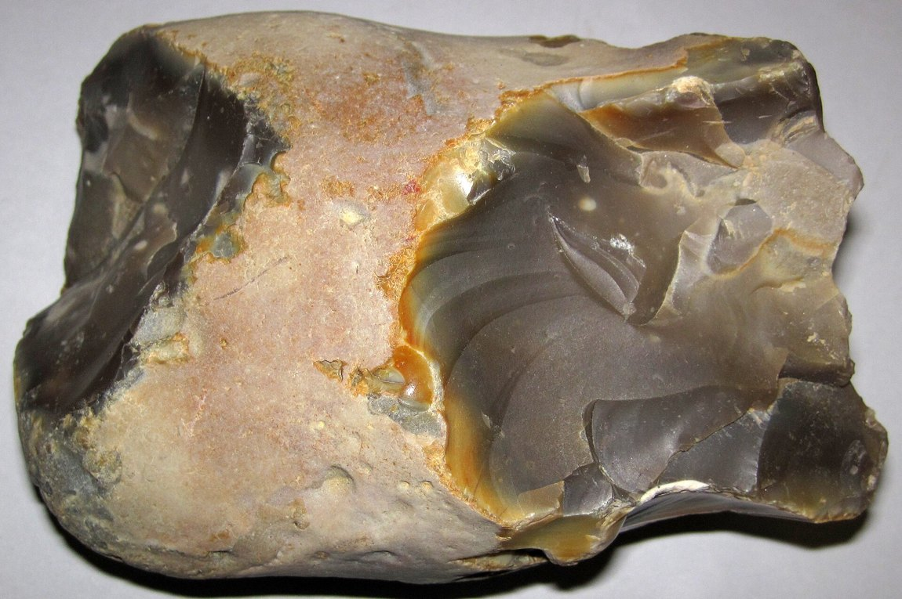
Z08-P03 · File:Chert nodule 2.jpg
Authentic open-license documentary/geological/environmental reference photograph
Credit: James St. John · License: CC BY 2.0 (https://creativecommons.org/licenses/by/2.0)
Locality/date: Source record: File:Chert nodule 2.jpg; date=2024-02-09 17:52:28
Original SHA-256: fdd8a5bfd107e6ba… · Original JPEG
Expert validation: PENDING · Diagnostic: WITHHELD · Consumption: N/A
 Z08-P08 · File:Agat Lake Superior (Lake superior agate) - Minnesota, USA.jpg
Z08-P08 · File:Agat Lake Superior (Lake superior agate) - Minnesota, USA.jpg
Authentic open-license documentary/geological/environmental reference photograph
Credit: Lech Darski · License: CC BY-SA 4.0 (https://creativecommons.org/licenses/by-sa/4.0)
Locality/date: Source record: File:Agat Lake Superior (Lake superior agate) - Minnesota, USA.jpg; date=2018-03-10 18:20:09
Original SHA-256: da1af339c5b589b8… · Original JPEG
Expert validation: PENDING · Diagnostic: WITHHELD · Consumption: N/A
 Z08-P26 · File:Chrysotile and asbestos (GeoDIL number - 2527).jpg
Z08-P26 · File:Chrysotile and asbestos (GeoDIL number - 2527).jpg
Authentic open-license documentary/geological/environmental reference photograph
Credit: Nessa Eull · License: CC0 (http://creativecommons.org/publicdomain/zero/1.0/deed.en)
Locality/date: Source record: File:Chrysotile and asbestos (GeoDIL number - 2527).jpg; date=22 March 2002
Original SHA-256: e79bcd9a38c9adfd… · Original JPEG
Expert validation: PENDING · Diagnostic: WITHHELD · Consumption: N/A
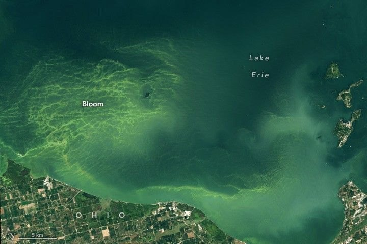
Z04-P14 · File:Lake Erie Blooms (153282).jpg
Authentic open-license documentary/geological/environmental reference photograph
Credit: NASA Earth Observatory image by Wanmei Liang, using Landsat data from the U.S. Geological Survey. Story by Lindsey Doermann. · License: Public domain (https://commons.wikimedia.org/wiki/File:Lake_Erie_Blooms_(153282).jpg)
Locality/date: Source record: File:Lake Erie Blooms (153282).jpg; date=Taken on 13 August 2024
Original SHA-256: 650462b74237c590… · Original JPEG
Expert validation: PENDING · Diagnostic: WITHHELD · Consumption: N/A
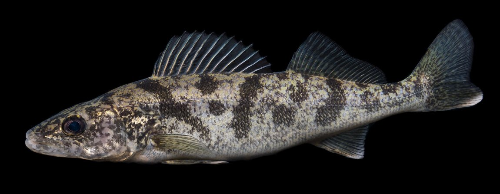
Z06-P08 · File:Walleye (Sander vitreus).jpg
Authentic open-license documentary/geological/environmental reference photograph
Credit: USFWS Mountain Prairie · License: Public domain (https://commons.wikimedia.org/wiki/File:Walleye_(Sander_vitreus).jpg)
Locality/date: Source record: File:Walleye (Sander vitreus).jpg; date=2022-02-23 09:01:19
Original SHA-256: a06e4da1062aeb77… · Original JPEG
Expert validation: PENDING · Diagnostic: WITHHELD · Consumption: N/A
 Z06-P25 · File:2024-02-13 09 26 40 Deer tracks in fresh snow behind a house along Aquetong Lane during a moderate snowstorm in the Mountainview section of Ewing Township, Mercer County, New Jersey.jpg
Z06-P25 · File:2024-02-13 09 26 40 Deer tracks in fresh snow behind a house along Aquetong Lane during a moderate snowstorm in the Mountainview section of Ewing Township, Mercer County, New Jersey.jpg
Authentic open-license documentary/geological/environmental reference photograph
Credit: Famartin · License: CC BY-SA 4.0 (https://creativecommons.org/licenses/by-sa/4.0)
Locality/date: Source record: File:2024-02-13 09 26 40 Deer tracks in fresh snow behind a house along Aquetong Lane during a moderate snowstorm in the Mountainview section of Ewing Township, Mercer County, New Jersey.jpg; date=2024-02-13 09:26:40
Original SHA-256: 7f4142bbc2f9a566… · Original JPEG
Expert validation: PENDING · Diagnostic: WITHHELD · Consumption: N/A
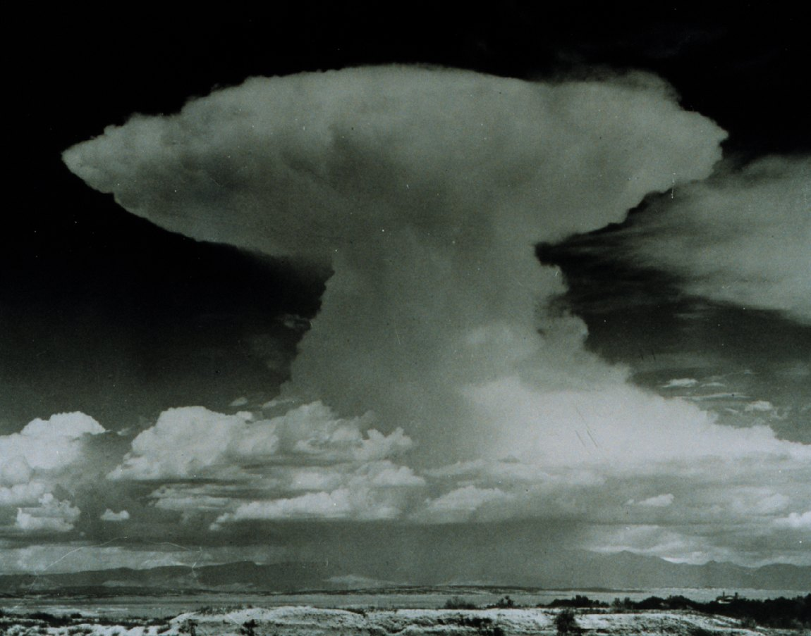
Z11-P38 · File:Cumulonimbus NOAA gov.jpg
Authentic open-license documentary/geological/environmental reference photograph
Credit: Mr. Herbert Campbell · License: Public domain (https://commons.wikimedia.org/wiki/File:Cumulonimbus_NOAA_gov.jpg)
Locality/date: Source record: File:Cumulonimbus NOAA gov.jpg; date=recorded on source page
Original SHA-256: 3616592b6ba3c0f2… · Original JPEG
Expert validation: PENDING · Diagnostic: WITHHELD · Consumption: N/A
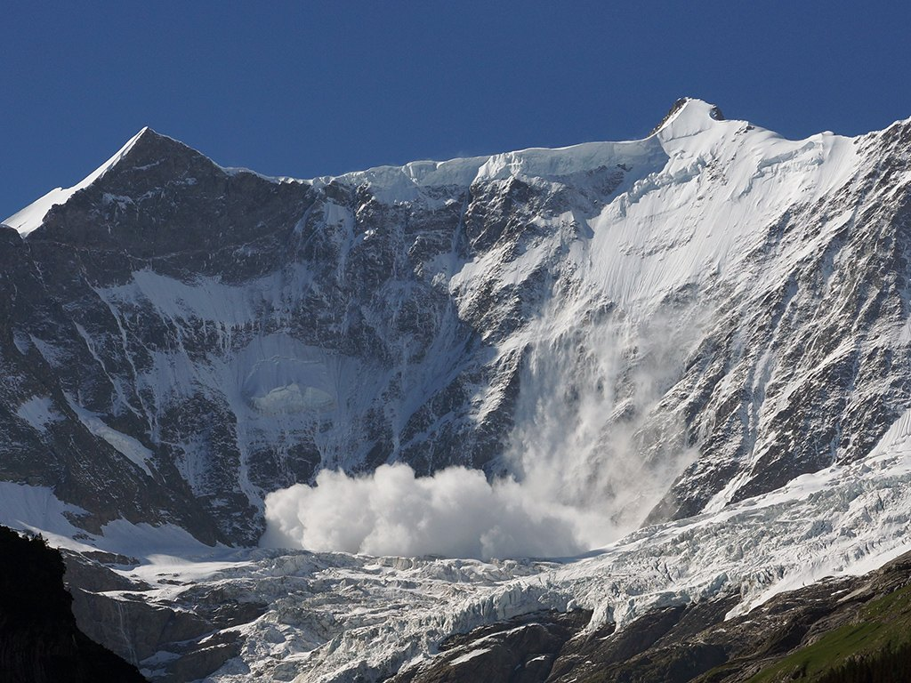
Z12-P40 · File:Avalanche from Gross Fiescherhorn.jpg
Authentic open-license documentary/geological/environmental reference photograph
Credit: cws.csw · License: CC BY-SA 4.0 (https://creativecommons.org/licenses/by-sa/4.0)
Locality/date: Source record: File:Avalanche from Gross Fiescherhorn.jpg; date=2016-07-16 09:34:04
Original SHA-256: 19937ac3e121aa71… · Original JPEG
Expert validation: PENDING · Diagnostic: WITHHELD · Consumption: N/A
 Z15-P24 · File:FEMA - 28207 - Photograph by Marvin Nauman taken on 02-07-2007 in Washington.jpg
Z15-P24 · File:FEMA - 28207 - Photograph by Marvin Nauman taken on 02-07-2007 in Washington.jpg
Authentic open-license documentary/geological/environmental reference photograph
Credit: Marvin Nauman · License: Public domain (https://commons.wikimedia.org/wiki/File:FEMA_-_28207_-_Photograph_by_Marvin_Nauman_taken_on_02-07-2007_in_Washington.jpg)
Locality/date: Source record: File:FEMA - 28207 - Photograph by Marvin Nauman taken on 02-07-2007 in Washington.jpg; date=2007-02-07
Original SHA-256: c1fe3a5c6302df8c… · Original JPEG
Expert validation: PENDING · Diagnostic: WITHHELD · Consumption: N/A
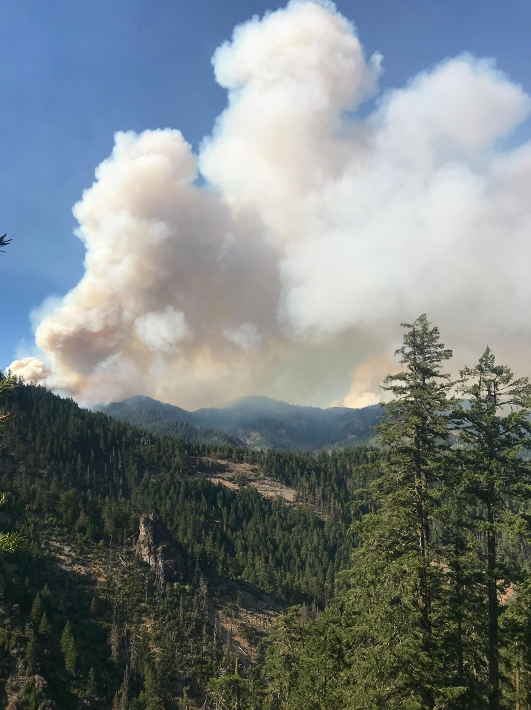
Z15-P30 · File:Sugar and Miles Fire Smoke Plumes (42797043485).jpg
Authentic open-license documentary/geological/environmental reference photograph
Credit: U.S. Forest Service- Pacific Northwest Region · License: Public domain (https://commons.wikimedia.org/wiki/File:Sugar_and_Miles_Fire_Smoke_Plumes_(42797043485).jpg)
Locality/date: Source record: File:Sugar and Miles Fire Smoke Plumes (42797043485).jpg; date=2018-07-28 16:45
Original SHA-256: 6428592f4d6c3b82… · Original JPEG
Expert validation: PENDING · Diagnostic: WITHHELD · Consumption: N/A
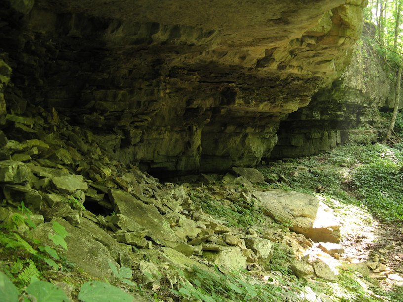
Z08-P09 · File:Karst limestone bluff and talus by Todd Crabtree (8497631543).jpg
Authentic open-license documentary/geological/environmental reference photograph
Credit: U.S. Fish and Wildlife Service Southeast Region · License: Public domain (https://commons.wikimedia.org/wiki/File:Karst_limestone_bluff_and_talus_by_Todd_Crabtree_(8497631543).jpg)
Locality/date: Source record: File:Karst limestone bluff and talus by Todd Crabtree (8497631543).jpg; date=2013-02-22 14:18
Original SHA-256: f76f97867f87e8a4… · Original JPEG
Expert validation: PENDING · Diagnostic: WITHHELD · Consumption: N/A
 Z05-P117 · MIN 971994 (GBIF 4874557339)
Z05-P117 · MIN 971994 (GBIF 4874557339)
Authentic institutional voucher image
Credit: MIN / Adams, Gerry · License: CC0 1.0 (https://creativecommons.org/publicdomain/zero/1.0/)
Locality/date: Minnesota, Clearwater; date=2022-09-23; basis=PRESERVED_SPECIMEN
Original SHA-256: 5616742f5926967c… · Original JPEG
Expert validation: PENDING · Diagnostic: WITHHELD · Consumption: WITHHELD_HOLD
 Z05-P117 · iNaturalist 405883107 (GBIF 6579424581)
Z05-P117 · iNaturalist 405883107 (GBIF 6579424581)
Authentic field observation study photograph (CC0/CC-BY)
Credit: iNaturalist / Erica Tava Johnson · License: CC BY 4.0 (https://creativecommons.org/licenses/by/4.0/)
Locality/date: Minnesota, locality in GBIF; date=2026-10-04; basis=HUMAN_OBSERVATION
Original SHA-256: 5ed3a4f74490ca8e… · Original JPEG
Expert validation: PENDING · Diagnostic: WITHHELD · Consumption: WITHHELD_HOLD
 Z05-P122 · MIN 989693 (GBIF 4032183345)
Z05-P122 · MIN 989693 (GBIF 4032183345)
Authentic institutional voucher image
Credit: MIN / Timothy J. S. Whitfeld; Rhett Johnson, Brian Johnson · License: CC0 1.0 (https://creativecommons.org/publicdomain/zero/1.0/)
Locality/date: Minnesota, Swift; date=2022-07-06; basis=PRESERVED_SPECIMEN
Original SHA-256: 64a75cf876ac1c18… · Original JPEG
Expert validation: PENDING · Diagnostic: WITHHELD · Consumption: WITHHELD_HOLD
 Z05-P122 · iNaturalist 361057144 (GBIF 6320208530)
Z05-P122 · iNaturalist 361057144 (GBIF 6320208530)
Authentic field observation study photograph (CC0/CC-BY)
Credit: iNaturalist / evangrimes · License: CC BY 4.0 (https://creativecommons.org/licenses/by/4.0/)
Locality/date: Minnesota, locality in GBIF; date=2026-05-12; basis=HUMAN_OBSERVATION
Original SHA-256: a14896d2c6984f9f… · Original JPEG
Expert validation: PENDING · Diagnostic: WITHHELD · Consumption: WITHHELD_HOLD
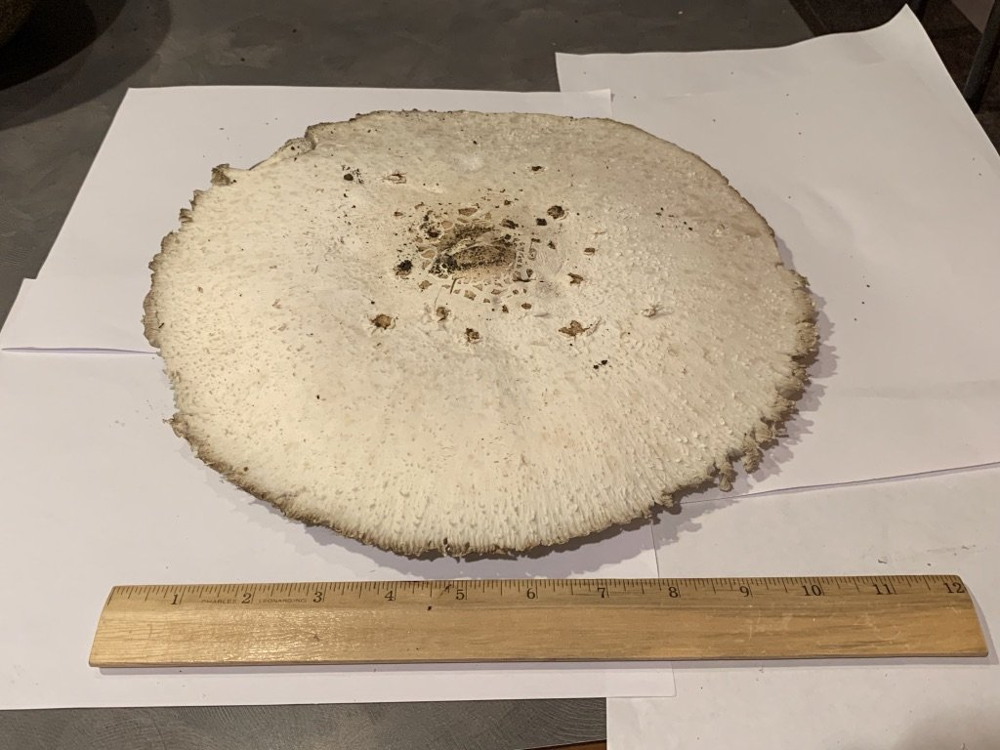
Z05-P121 · MIN 960791 (GBIF 2995673342)
Authentic institutional voucher image
Credit: MIN / Etzwiler, Nancy · License: CC0 1.0 (https://creativecommons.org/publicdomain/zero/1.0/)
Locality/date: Minnesota, Wabasha; date=2019-09-21; basis=PRESERVED_SPECIMEN
Original SHA-256: 5b4786f6074dfc5c… · Original JPEG
Expert validation: PENDING · Diagnostic: WITHHELD · Consumption: WITHHELD_HOLD
 Z05-P128 · MIN 960606 (GBIF 2651317024)
Z05-P128 · MIN 960606 (GBIF 2651317024)
Authentic institutional voucher image
Credit: MIN / Lee, Michael · License: CC0 1.0 (https://creativecommons.org/publicdomain/zero/1.0/)
Locality/date: Minnesota, Lake; date=2002-06-26; basis=PRESERVED_SPECIMEN
Original SHA-256: 8c03ddbe099a3bb3… · Original JPEG
Expert validation: PENDING · Diagnostic: WITHHELD · Consumption: WITHHELD_HOLD
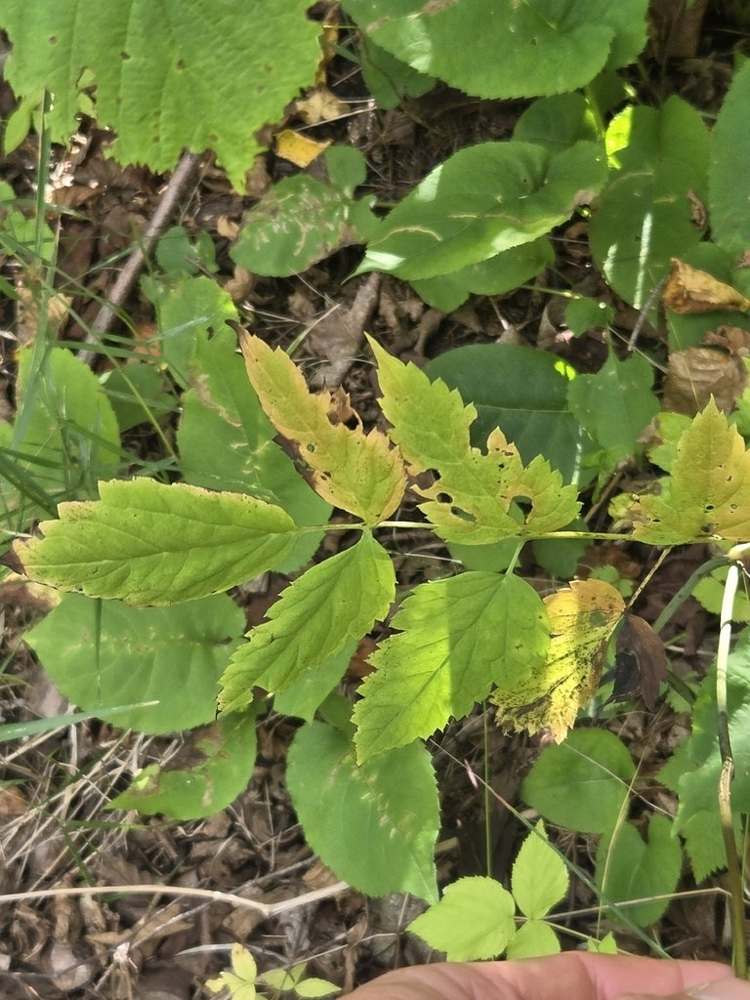
Z05-P128 · iNaturalist 398870328 (GBIF 6551083469)
Authentic field observation study photograph (CC0/CC-BY)
Credit: iNaturalist / Charlie Pavlisich · License: CC BY 4.0 (https://creativecommons.org/licenses/by/4.0/)
Locality/date: Minnesota, locality in GBIF; date=2026-09-09; basis=HUMAN_OBSERVATION
Original SHA-256: 3cc37e046a47911f… · Original JPEG
Expert validation: PENDING · Diagnostic: WITHHELD · Consumption: WITHHELD_HOLD
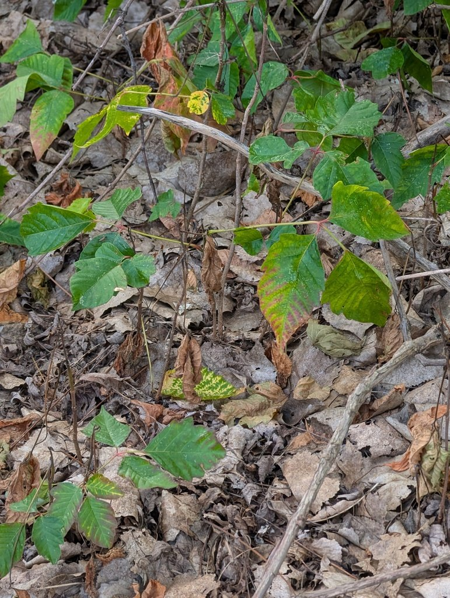
Z05-P130 · iNaturalist 375673594 (GBIF 6441547533)
Authentic field observation study photograph (CC0/CC-BY)
Credit: iNaturalist / Marilynn Miller · License: CC BY 4.0 (https://creativecommons.org/licenses/by/4.0/)
Locality/date: Minnesota, locality in GBIF; date=2026-06-26; basis=HUMAN_OBSERVATION
Original SHA-256: 7b1be07a6ee16c01… · Original JPEG
Expert validation: PENDING · Diagnostic: WITHHELD · Consumption: WITHHELD_HOLD
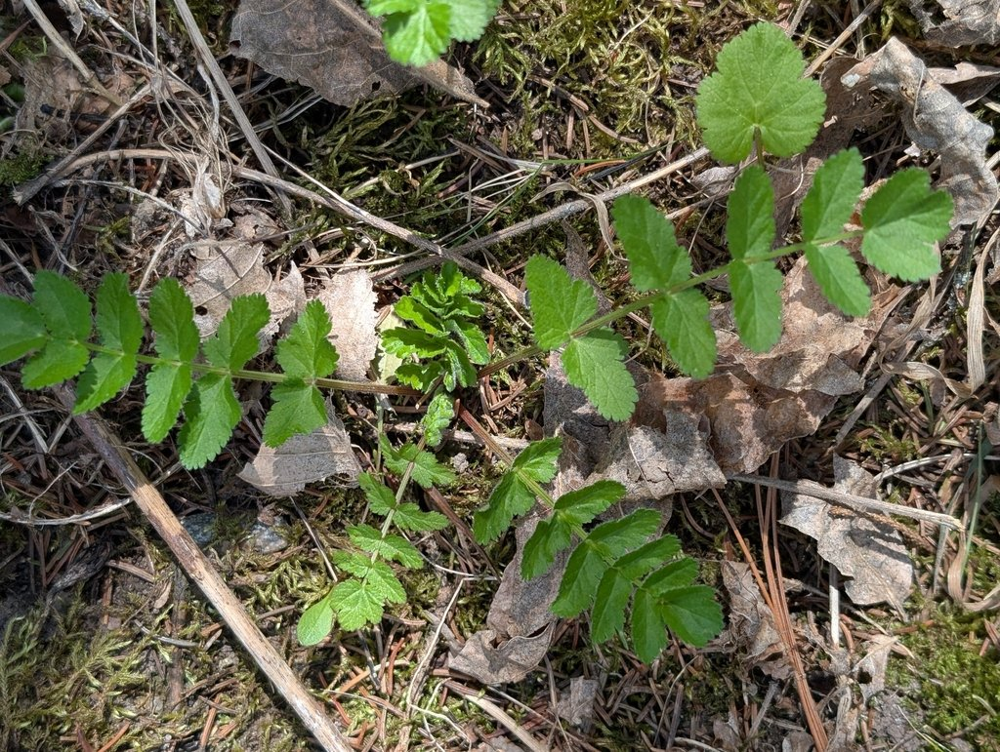
Z05-P131 · iNaturalist 359497699 (GBIF 6274100909)
Authentic field observation study photograph (CC0/CC-BY)
Credit: iNaturalist / elonicera · License: CC0 1.0 (https://creativecommons.org/publicdomain/zero/1.0/)
Locality/date: Minnesota, locality in GBIF; date=2026-05-07; basis=HUMAN_OBSERVATION
Original SHA-256: 623f2fae16ca6c7f… · Original JPEG
Expert validation: PENDING · Diagnostic: WITHHELD · Consumption: WITHHELD_HOLD
 Z05-P124 · iNaturalist 364799591 (GBIF 6334485314)
Z05-P124 · iNaturalist 364799591 (GBIF 6334485314)
Authentic field observation study photograph (CC0/CC-BY)
Credit: iNaturalist / Bob · License: CC BY 4.0 (https://creativecommons.org/licenses/by/4.0/)
Locality/date: Minnesota, locality in GBIF; date=2026-05-24; basis=HUMAN_OBSERVATION
Original SHA-256: 547af5bca458c4d8… · Original JPEG
Expert validation: PENDING · Diagnostic: WITHHELD · Consumption: WITHHELD_HOLD
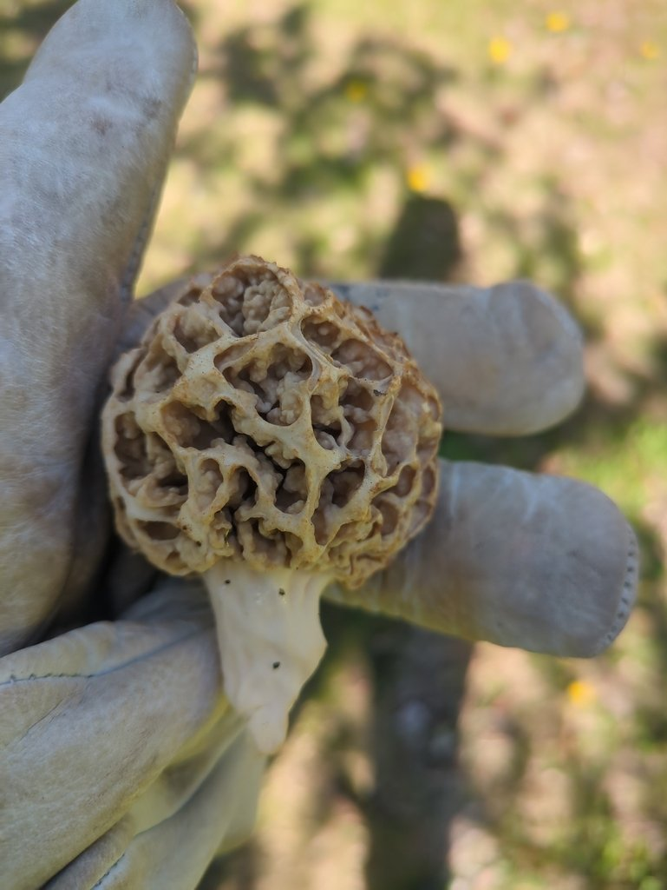
Z05-P98 · iNaturalist 356536524 (GBIF 6253049510)
Authentic field observation study photograph (CC0/CC-BY)
Credit: iNaturalist / Karli Cich · License: CC BY 4.0 (https://creativecommons.org/licenses/by/4.0/)
Locality/date: Minnesota, locality in GBIF; date=2026-04-29; basis=HUMAN_OBSERVATION
Original SHA-256: 7a19d245528892e6… · Original JPEG
Expert validation: PENDING · Diagnostic: WITHHELD · Consumption: WITHHELD_HOLD
 Z05-P118 · iNaturalist 357634398 (GBIF 6252896281)
Z05-P118 · iNaturalist 357634398 (GBIF 6252896281)
Authentic field observation study photograph (CC0/CC-BY)
Credit: iNaturalist / Ashley Darst · License: CC BY 4.0 (https://creativecommons.org/licenses/by/4.0/)
Locality/date: Minnesota, locality in GBIF; date=2026-05-02; basis=HUMAN_OBSERVATION
Original SHA-256: a76aee1821677809… · Original JPEG
Expert validation: PENDING · Diagnostic: WITHHELD · Consumption: WITHHELD_HOLD
 Z05-P100 · MIN 981854 (GBIF 4929677336)
Z05-P100 · MIN 981854 (GBIF 4929677336)
Authentic institutional voucher image
Credit: MIN / Pieper, Tyler · License: CC0 1.0 (https://creativecommons.org/publicdomain/zero/1.0/)
Locality/date: Minnesota, Meeker; date=2023-09-02; basis=PRESERVED_SPECIMEN
Original SHA-256: 3c015ec6b9db258f… · Original JPEG
Expert validation: PENDING · Diagnostic: WITHHELD · Consumption: WITHHELD_HOLD
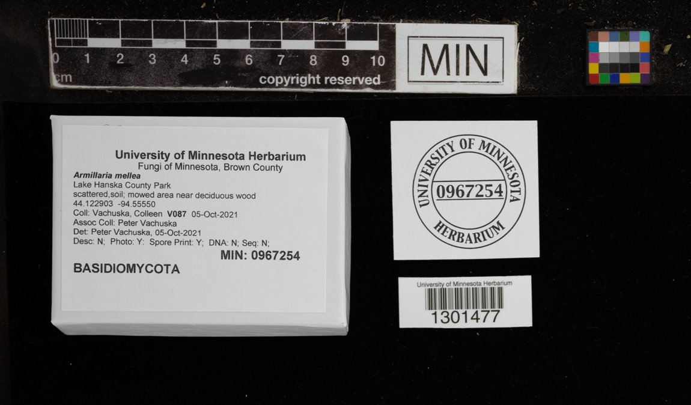
Z05-P110 · MIN 967254 (GBIF 3806988318)
Authentic institutional voucher image
Credit: MIN / Vachuska, Colleen; Peter Vachuska · License: CC0 1.0 (https://creativecommons.org/publicdomain/zero/1.0/)
Locality/date: Minnesota, Brown; date=2021-10-05; basis=PRESERVED_SPECIMEN
Original SHA-256: a71d57ddbe710a46… · Original JPEG
Expert validation: PENDING · Diagnostic: WITHHELD · Consumption: WITHHELD_HOLD
 Z05-P79 · MIN 974323 (GBIF 4438439507)
Z05-P79 · MIN 974323 (GBIF 4438439507)
Authentic institutional voucher image
Credit: MIN / Smith, Welby R; Ann Geisen · License: CC0 1.0 (https://creativecommons.org/publicdomain/zero/1.0/)
Locality/date: Minnesota, Aitkin; date=2023-08-29; basis=PRESERVED_SPECIMEN
Original SHA-256: 911face2b6d744c7… · Original JPEG
Expert validation: PENDING · Diagnostic: WITHHELD · Consumption: WITHHELD_HOLD
 Z05-P83 · iNaturalist 335006230 (GBIF 6147547020)
Z05-P83 · iNaturalist 335006230 (GBIF 6147547020)
Authentic field observation study photograph (CC0/CC-BY)
Credit: iNaturalist / Kevin Speray · License: CC BY 4.0 (https://creativecommons.org/licenses/by/4.0/)
Locality/date: Minnesota, locality in GBIF; date=2026-01-16; basis=HUMAN_OBSERVATION
Original SHA-256: 243c70840f7b046a… · Original JPEG
Expert validation: PENDING · Diagnostic: WITHHELD · Consumption: WITHHELD_HOLD
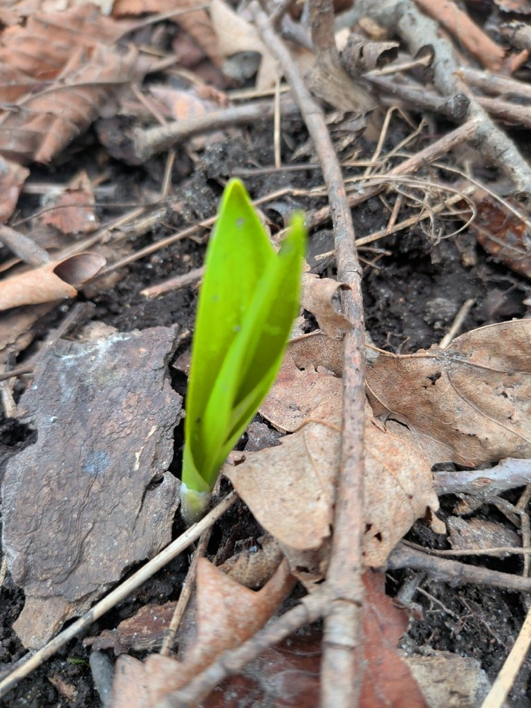
Z05-P85 · iNaturalist 347628766 (GBIF 6188062451)
Authentic field observation study photograph (CC0/CC-BY)
Credit: iNaturalist / Bria Abeles-Allison · License: CC BY 4.0 (https://creativecommons.org/licenses/by/4.0/)
Locality/date: Minnesota, locality in GBIF; date=2026-04-05; basis=HUMAN_OBSERVATION
Original SHA-256: 0ae8c46b5d307251… · Original JPEG
Expert validation: PENDING · Diagnostic: WITHHELD · Consumption: WITHHELD_HOLD
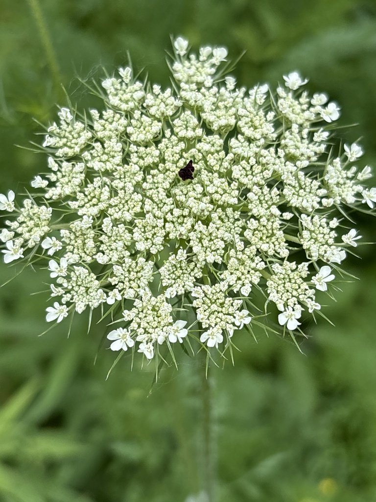
Z05-P92 · iNaturalist 374649340 (GBIF 6422066950)
Authentic field observation study photograph (CC0/CC-BY)
Credit: iNaturalist / Bob · License: CC BY 4.0 (https://creativecommons.org/licenses/by/4.0/)
Locality/date: Minnesota, locality in GBIF; date=2026-06-23; basis=HUMAN_OBSERVATION
Original SHA-256: 02e1a6ab1056d7fb… · Original JPEG
Expert validation: PENDING · Diagnostic: WITHHELD · Consumption: WITHHELD_HOLD